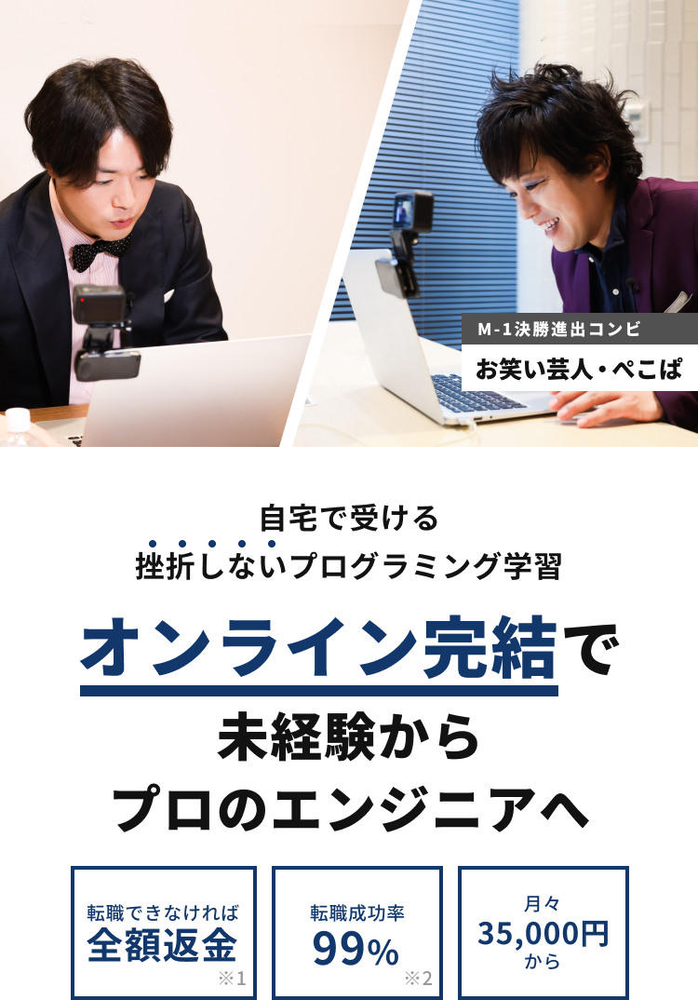

※1 全額返金には所定の条件がございます。詳細は利用規約をご参照下さい
※2 2019年8月末時点(学習完了後、当社転職支援を利用した方の転職成功率)

挫折せずにやり切れる
テックキャンプの
オンライン学習

テックキャンプのオンラインスタイルは従来のオンライン学習とは全く異なります。オンライン学習の最後までやりきれないという課題を、テックキャンプが培ってきたてってきてきなサポート体制によって解決しています。